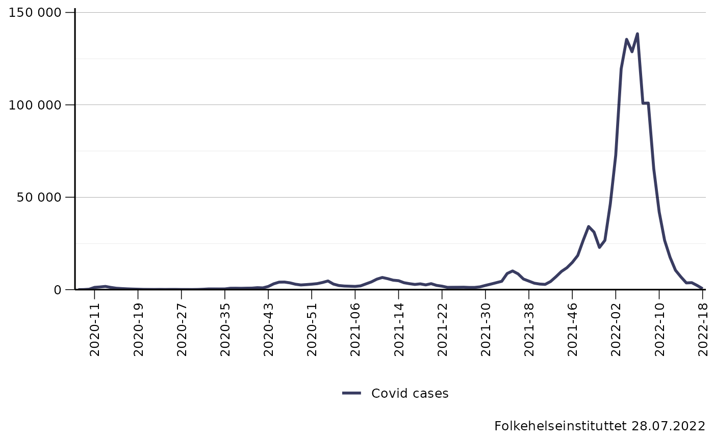
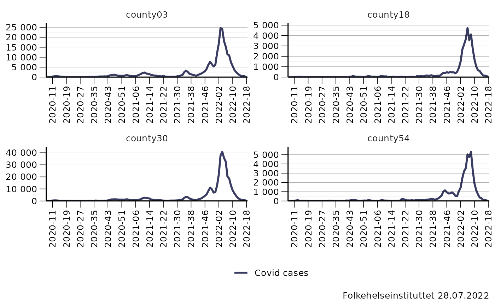
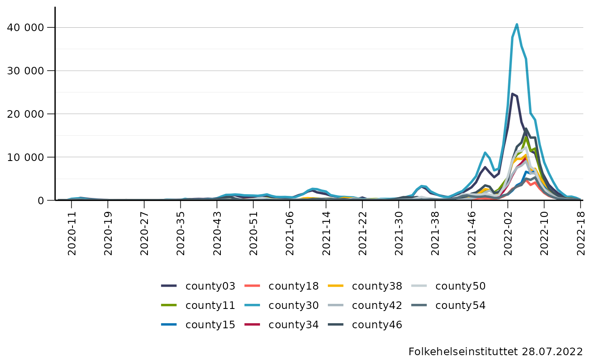

If the dataset is already long it needs to include the following columns: variable, name_outcome and n.
Usage
# S3 method for default
plot_timeseries(
x,
var_x = "isoyearweek",
var_y,
breaks_x = NULL,
breaks_y = NULL,
lab_main = NULL,
lab_sub = NULL,
lab_caption = fhi_caption(),
lab_y = NULL,
lab_x = NULL,
lab_legend = NULL,
legend_position = "bottom",
legend_direction = "horizontal",
format_y = format_nor_num_0,
facet_wrap = NULL,
facet_ncol = NULL,
palette = "primary",
palette_dir = 1,
scale_y = "free",
base_size = 12,
wide_table = TRUE,
var_group = NULL,
...
)Arguments
- x
Dataset
- var_x
"date" or "isoyearweek"
- var_y
The name of the variable to use on the y-axis of the graph
- breaks_x
Use splstyle::every_nth() to choose how many ticks to show on the x-axis
- breaks_y
Use splstyle::pretty_breaks() to add ticks on the y-axis
- lab_main
The main title of the graph
- lab_sub
The subtitle of the graph
- lab_caption
If not specified, splstyle::fhi_caption() is used as the lab_caption.
- lab_y
The label of the y-axis
- lab_x
The label of the x-axis
- lab_legend
The label of the legend.
- legend_position
The position the legend should have. If not specified, "bottom" is used.
- legend_direction
layout of items in legend ("horizontal" or "vertical")
- format_y
How the y-axis ticks should be formatted. For example splstyle::format_nor_num_0 or fhiplot::format_nor_perc_0
- facet_wrap
What column in the dataset to use to split the dataset.
- facet_ncol
How many columns with graphs if facet_wrap is used.
- palette
What palette to use for the lines. The default is "primary".
- palette_dir
1 or -1.
- scale_y
How to scale the y-axis if the graph is split with facet_wrap. Free or fixed.
- base_size
The base size of the plot.
- wide_table
TRUE if the data.table is wide and FALSE if the data.table is long.
- var_group
variable to group by
- ...
Not currently used.
Examples
plot_timeseries(norway_covid19_cases_by_time_location[granularity_geo == "nation" & granularity_time == "isoweek"], var_y = c("Covid cases" = "covid19_cases_testdate_n"), breaks_x = every_nth(8), breaks_y = splstyle::pretty_breaks(5))
#> Warning: `expand_scale()` is deprecated; use `expansion()` instead.

plot_timeseries(norway_covid19_cases_by_time_location[location_code %in% c("county03", "county18", "county30", "county54") & granularity_time == "isoweek"], var_y = c("Covid cases" = "covid19_cases_testdate_n"), breaks_x = every_nth(8), breaks_y = splstyle::pretty_breaks(5), facet_wrap = "location_code")
#> Warning: `expand_scale()` is deprecated; use `expansion()` instead.

plot_timeseries(norway_covid19_cases_by_time_location[granularity_geo == "county" & granularity_time == "isoweek"], var_y = c("Covid cases" = "covid19_cases_testdate_n"), breaks_x = every_nth(8), breaks_y = splstyle::pretty_breaks(5), var_group = "location_code")
#> Warning: `expand_scale()` is deprecated; use `expansion()` instead.
